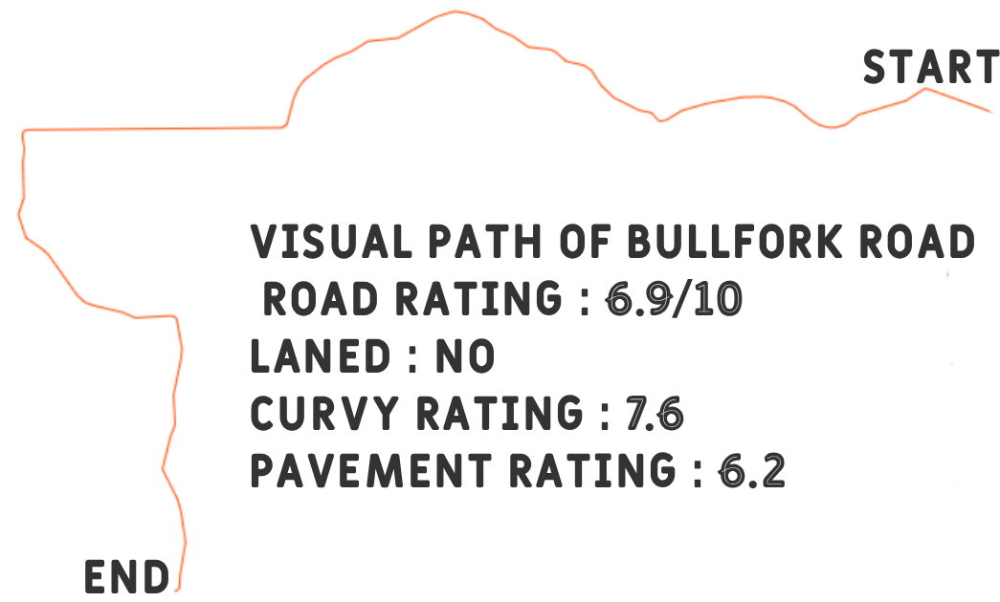

Road 1: US-229 Toward Metamora From Oldenburg
US-229 Toward Metamora starting from passing Oldenburg Academy's Field Haus is a thrilling road with many wide bends in a double landed area. It also features many tight turns and even 2, somewhat hairpins on the final section toward the church. This is my personal favorite road in this area.
- Road Rating : 9/10
- Laned : Yes
- Curvy Rating : 7
- Pavement Rating : 10
Road 2: Bullfork Road Toward Hamburg

Bullfork Road is a really fun road out towards Hamburg, or Lake Santee. This road has many "S" like bends and, lots of gravel. This gravel is why I rank this road lower compared to the others on the Road Map, it makes this road a lot more dangerous to drive on with the risk of sliding increased. Overall, this is a really fun road in the area around Oldenburg, Batesville, and I think you should go check it out.
Road 3: US-229 From Brums Toward Ballstown
US-229 from near Brums Woods headed towards Ballstown is a really fun section of road. It is a bit curvier and has more tight curves and more elevation changes compared to the other side toward Oldenburg. I believe this road is one of the best roads near Southeast Indiana. Be careful for the entrance hills near Brums; they have a couple crests with bends right after which can really upset your car's handling.
- Road Rating : 9/10
- Laned : Yes
- Curvy Rating : 8.5
- Pavement Rating : 10
Road 4: Hickory Rd East
Hickory Rd. Eastbound is a really fun, tight, and curvy road. It branches off US-229 toward Metamora, one of the previous roads on the Road Map. This road does not have a Google Earth view, and the Google Maps aerial view does not do these curves justice. I suggest you visit this road and check it out yourself sometime.
- Road Rating : 7.8/10
- Laned : No
- Curvy Rating : 9
- Pavement Rating : 6.2